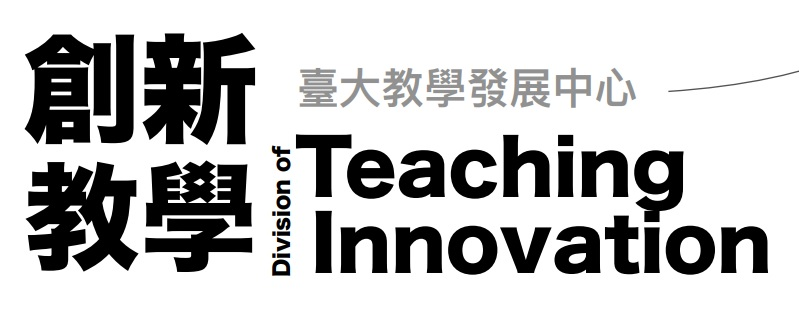
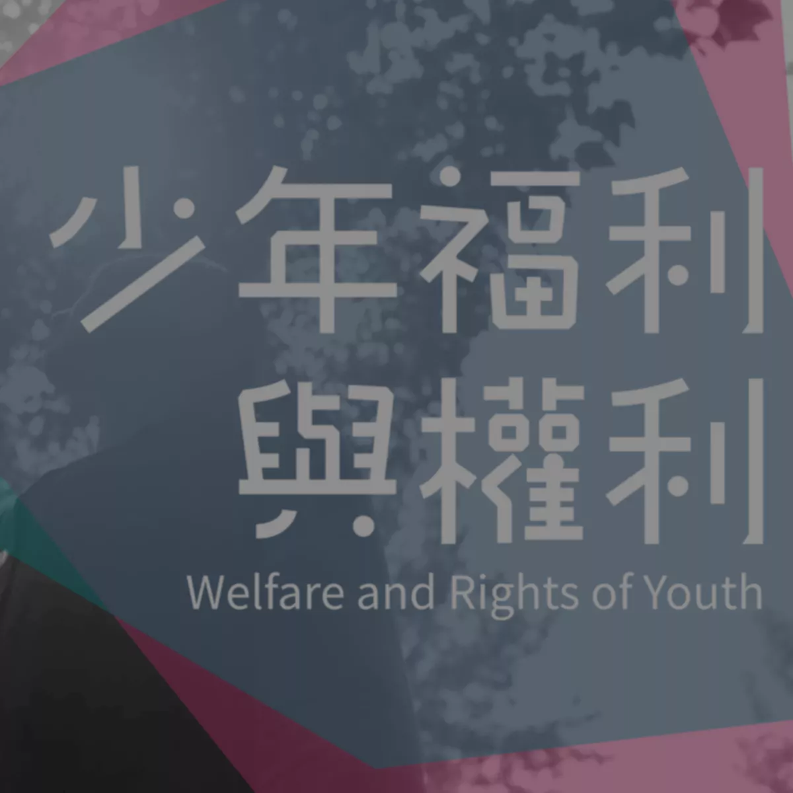
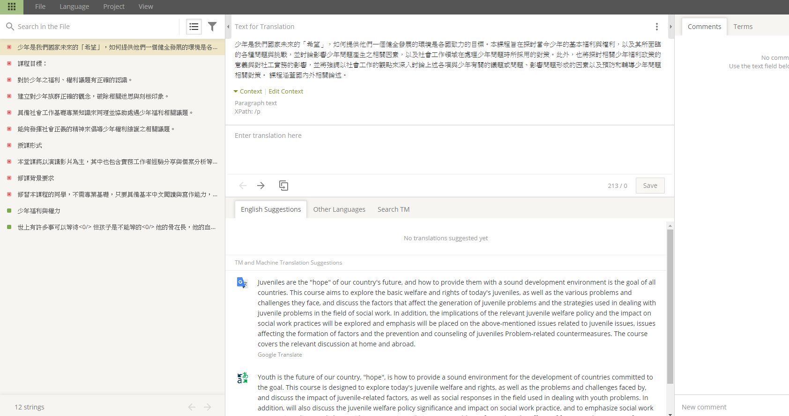
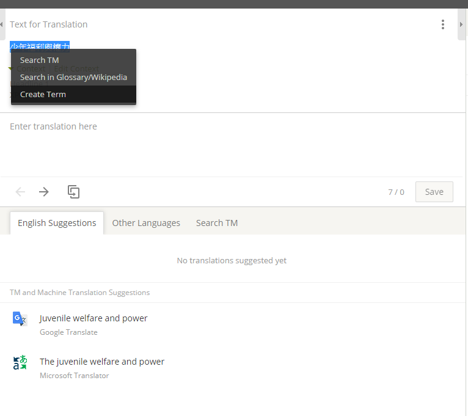
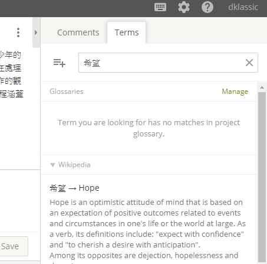
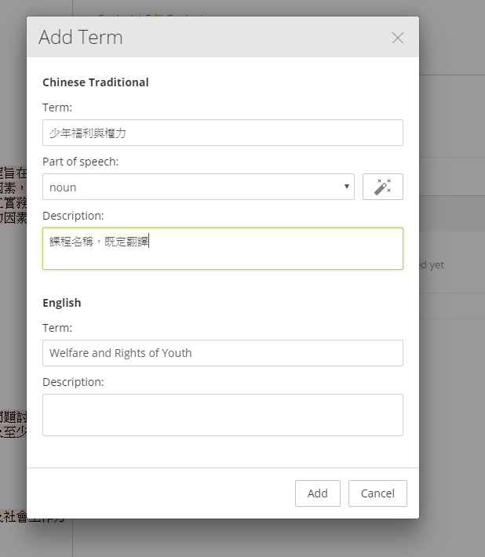
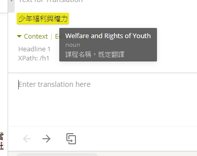
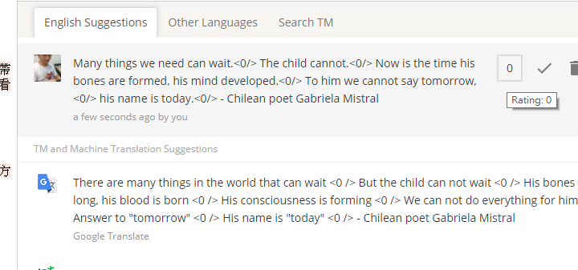
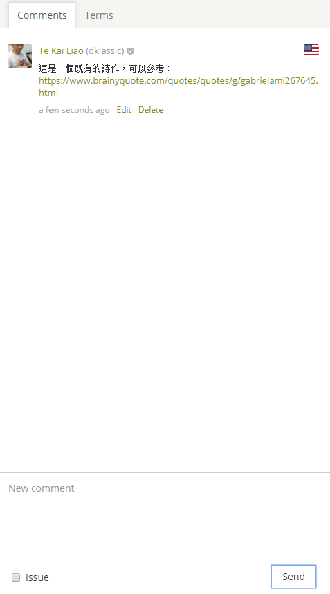

簡介
本次活動與教學發展中心創新教學組合作。
將會針對數個國立臺灣大學於 Coursera MOOC（大型線上開放課程）中的課程進行中翻英之工程，預期將會造福無數非中文母語使用者。

創意教學組說明簡報本計畫與國立臺灣大學資訊管理學系之服務學習課程合作
將會對數個國立臺灣大學的 Coursera 課程加以翻譯。
本次活動與教學發展中心創新教學組合作。
將會針對數個國立臺灣大學於 Coursera MOOC（大型線上開放課程）中的課程進行中翻英之工程，預期將會造福無數非中文母語使用者。

創意教學組說明簡報
絕大多數的社會對於少年都持有ㄧ些負面的刻板印象，社會工作專業所協助的少年也通常不如兒童或其他弱勢族群來得可愛或可憐，因此在看待少年族群時，大家多關注他們所展現出來的問題，如中輟、未婚懷孕、吸毒、逃家逃學等偏差行為，在急於矯正其問題的同時，便容易忽略他們的主體性以及所擁有的權利。
聯合國兒童權利公約於 1990 年生效，臺灣於 2014 年通過兒童權利公約施行法，凡 18 歲以下兒童皆應得到國家制度上應有的權利保障，本課程便是希望從權利觀點出發，探討台灣社會在提供少年福利的同時，也能確保他們的權利。
除此之外，這門課也會介紹一些台灣目前常見的少年福利服務資源與工作模式。在喚醒大家對於少年權利意識覺醒的同時，也反思目前服務內容或相關政策該如何充權少年，使他們順利成功轉銜為公民社會的一份子！
－社工系 陳毓文教授
課程影片待上傳
Crowdin 是個商業用線上翻譯平台，提供了大量能夠協助翻譯的媒介，並且非常適合大量譯者、複數語言的共同編輯。
該平台同時也支持開源專案與學術用途，而本次有幸通過學術用途之審核。因此將使用此平台進行翻譯。
參與翻譯的同學請在這個平台上免費註冊一個帳號。
在這份專案中有一份 practice.html 的檔案，所有人都可以自由隨意地玩弄沒關係。

這是基本編輯介面：左邊是要翻譯的列表，中間是翻譯區域





如果有任何問題，歡迎隨時來信詢問